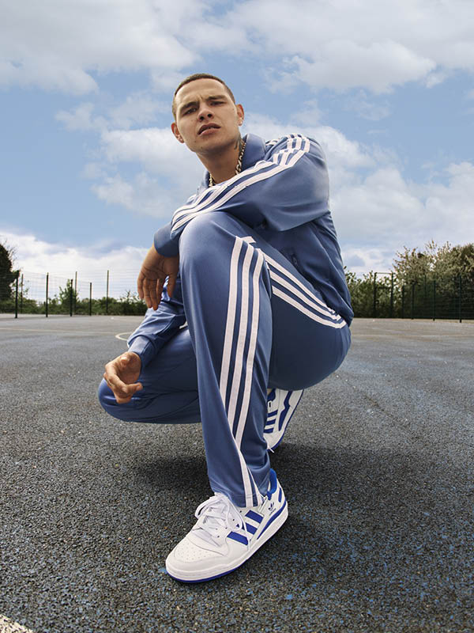

Adidas Forum
ADIDAS FORUM: CÓMODAS Y VERSÁTILES
Encontrá en esta sección zapatillas adidas Forum que muestran tu estilo personal, Sos único en este mundo. Compartí tu visión única con modelos cómodos y
versátiles. Las adidas Forum te permiten mantener tu estilo casual al usarlas con jeans,
o lucir un poco más arreglado al combinarlas con un pantalón de vestir. De cualquier forma, cautivarás todas las miradas.

Adidas SuperStar
Creadas para el básquet, pero adoptadas por el hip-hop y el skate, las clásicas Superstar de cuero cambiaron las reglas del juego desde que salieron de las canchas.
Hoy, su icónica puntera de caucho es usada en
todo el mundo gracias a su diseño premium y su silueta atemporal. Un clásico siempre será un clásico.

Adiadas NMD
La colección NMD de adidas es una de las apuestas más transgresoras de la marca. La idea surgió en el 2015, y año tras año han ido incorporándose nuevos artículos a la familia.
Estas siglas hacen un guiño al espíritu nómada, dado que adidas es una firme defensora del movimiento. La colección se compone
fundamentalmente de zapatillas cuya seña de identidad es su diseño futurista: estilo acompañado de innovación.